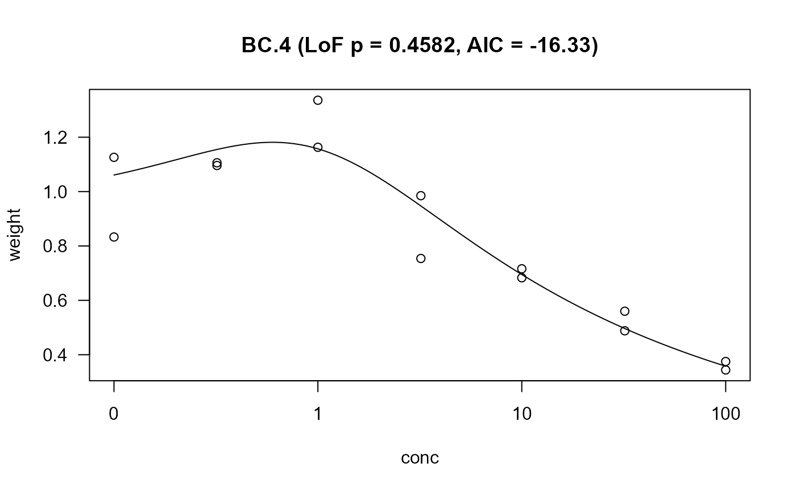

This function serves as a robust wrapper for drc::ED. It calculates
effective doses (EDs) for multiple specified response levels. Its primary
feature is the ability to gracefully handle cases where an ED value is not
mathematically estimable from the model (e.g., the requested response is
outside the model's asymptotes). Instead of throwing an error, it returns a
row of NA values for that specific response level, ensuring the overall
analysis can proceed.
ED_robust(
mod,
respLev = c(10, 20, 50),
interval = get_ed_interval(mod$fct$name, small_n = TRUE),
CI_level = 0.95,
verbose = FALSE,
...
)An object of class 'drc', representing the fitted dose-response model.
A numeric vector specifying the response levels for which to
calculate ED values (e.g., c(10, 50) for ED10 and ED50).
A character string specifying the method for calculating
confidence intervals. Defaults to the output of get_ed_interval().
Common options include "delta", "tfls", or "buckland".
A numeric value between 0 and 1 indicating the confidence level for the intervals (e.g., 0.95 for a 95% CI).
A logical value. If TRUE, the function will print status
messages about the calculation progress and any errors encountered for each
response level. Default is FALSE.
Additional arguments to be passed directly to drc::ED.
A data.table where each row corresponds to a requested response level.
The table includes the ED estimate, standard error, confidence interval
(Lower, Upper), and metadata about the calculation (confidence level, method,
model name, and EC level). Rows for non-estimable EDs are populated with NA.
# \donttest{
# Load necessary packages for the example
library(drc)
library(dplyr)
#>
#> Attaching package: 'dplyr'
#> The following object is masked from 'package:MASS':
#>
#> select
#> The following objects are masked from 'package:stats':
#>
#> filter, lag
#> The following objects are masked from 'package:base':
#>
#> intersect, setdiff, setequal, union
library(data.table)
#> Warning: package 'data.table' was built under R version 4.5.1
#>
#> Attaching package: 'data.table'
#> The following objects are masked from 'package:dplyr':
#>
#> between, first, last
# Use a dataset with hormesis where some ED levels are not reachable
data(lettuce)
# Run a hormesis model (4-parameter log-logistic with a non-zero lower asymptote)
m = drm(weight~conc, data = lettuce, fct = BC.4())
# create plot header
p = modelFit(m)$`p value`[2] %>% round(.,4)
aic = AIC(m) %>% round(.,2)
plot_title = paste0(m$fct$name, " (LoF p = ", p, ", AIC = ", aic, ")")
# plot data
plot(m, type = "all", main = plot_title)

# Get the EC values robustly, including levels that may not be estimable
ED_robust(m, respLev = c(10, 50, 98), CI_level = 0.95)
#> Error in ED_robust(m, respLev = c(10, 50, 98), CI_level = 0.95): could not find function "ED_robust"
# Expected output will show calculations for ED10 and ED50, and a row of NAs for ED98.
# }